← Index · ← Previous · Next →
Authors: Mario Berta, Hao-Chung Cheng, Roberto Rubboli, Marco Tomamichel
Type: theory · Category: quantum information and computing · PDF: https://arxiv.org/pdf/2608.27202v1
Analysis basis: full PDF text, analyzed in chunks
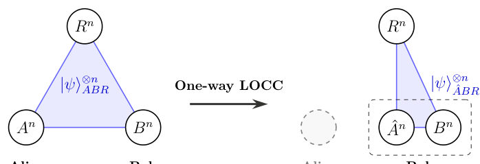
Summary. This theoretical paper calculates the exact strong converse exponent for quantum state merging, a key task in quantum information theory. It establishes that this exponent is governed by optimized $\alpha$-$z$ conditional Rényi entropies, which differs from standard results. The findings provide rigorous bounds on the achievable rates for quantum information transfer protocols.
Why it may be interesting. The precise characterization of the strong converse exponent using specific conditional entropy forms provides deep insights into the fundamental limits of quantum information processing tasks.
Main problem. The paper determines the strong converse exponent for the entanglement cost associated with quantum state merging.
Main result. The strong converse exponent is characterized by optimized $\alpha$-$z$ conditional Rényi entropies, contrasting with typical results governed by sandwiched conditional Rényi entropies.
Method. The analysis adapts the club-sandwiched converse method and utilizes techniques from Schatten-norm Hölder theory to establish asymptotic bounds on the fidelity decay.
Model / system. The study concerns the quantum state merging task, where a tripartite pure state $\psi_{ABR}$ is used to transfer information from Alice (A) to Bob, preserving coherence relative to an inaccessible reference system R.
Key observables. Entanglement Cost ($r$), Squared Fidelity ($F$), Purified Distance, and various conditional Rényi entropies ($H^{\uparrow}_{\alpha, \alpha/2}(A|B)_{\psi}$).
Important parameters / regimes. The exponent depends on the optimization parameter $\alpha \in [1/2, 1]$ and the rate $r$.
Assumptions / limitations. The analysis assumes finite-dimensional Hilbert spaces and focuses on the strong converse regime where the optimal fidelity decays exponentially.
Figures summary. Figure 1 illustrates the quantum state merging protocol. Table I summarizes the strong converse and error exponents for different smoothing types (Globally vs. Partially smoothed).
Paper structure. The paper develops the result by establishing upper and lower bounds on the fidelity decay rate, comparing the constraints imposed by global vs. partial smoothing, and deriving the final exponent using variational representations.
We determine the strong converse exponent for the entanglement cost of quantum state merging, showing that it is characterized by the optimized $α$-$z$ conditional Rényi entropies with $z=α/2\in[1/2,1]$. This contrasts with the sandwiched conditional Rényi entropies that typically govern strong converse exponents in quantum information theory. As a consequence, we derive the strong converse exponent of the partially smoothed conditional min-entropy in purified distance. This exponent is governed by club-sandwiched conditional entropies, whereas global smoothing leads to a sandwiched expression.
Authors: Ning Bao, Jacob March
Type: theory · Category: other · PDF: https://arxiv.org/pdf/2608.26377v1
Analysis basis: full PDF text, analyzed in chunks
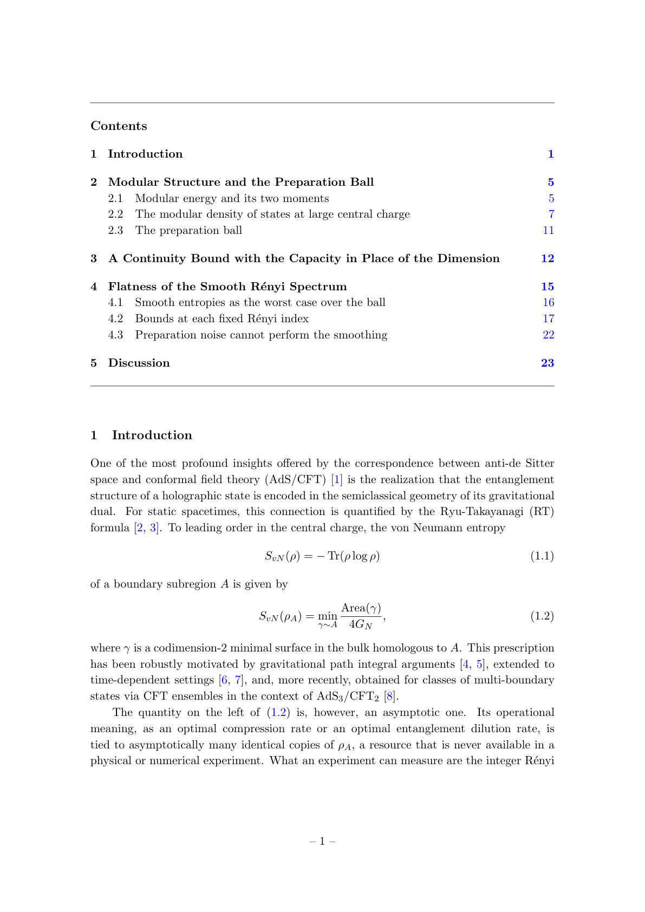
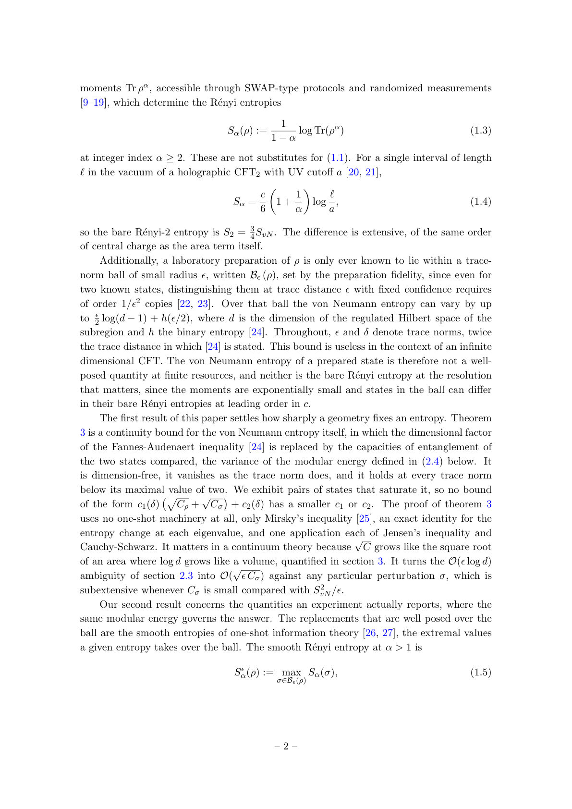
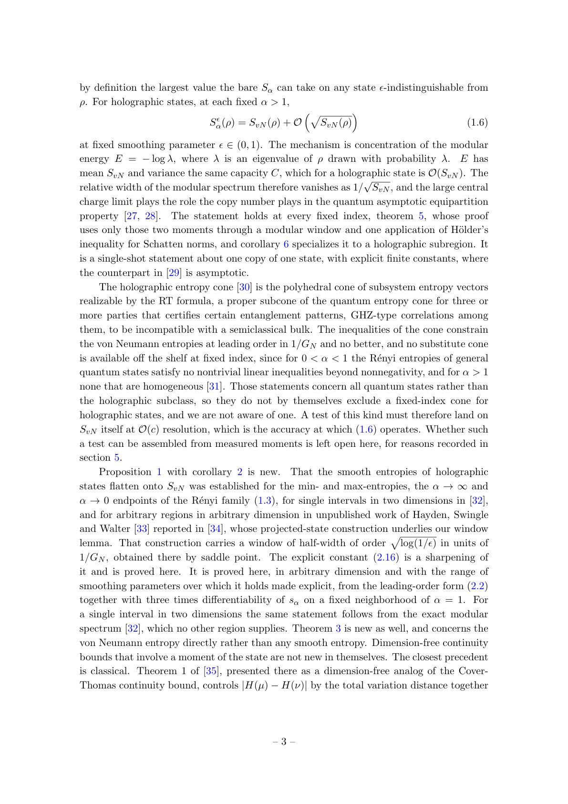
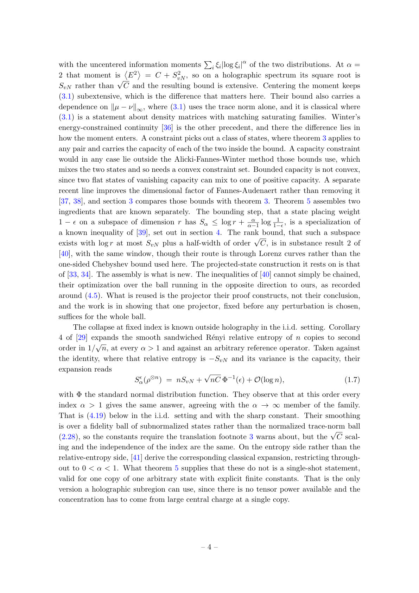
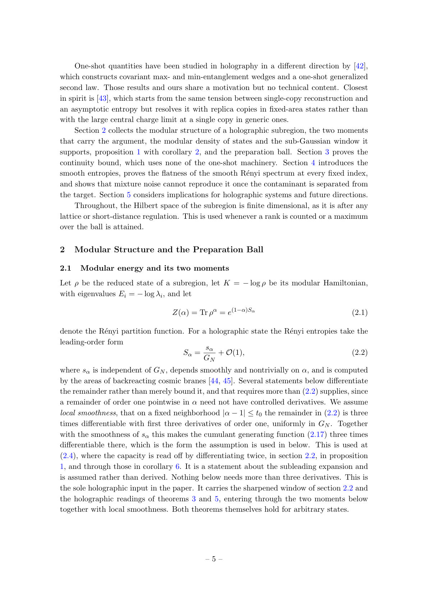
Summary. This work refines the understanding of holographic entropy by replacing problematic, dimension-dependent bounds with the capacity of entanglement. It proves that this capacity provides a robust, dimension-free constraint on the entanglement structure of quantum states. This is crucial for understanding the fundamental limits of entropy estimation in quantum gravity settings.
Why it may be interesting. It provides rigorous, resource-aware bounds on entanglement entropy derived from gravity/holography, which informs the fundamental limits of quantum information processing in strongly coupled systems.
Main problem. The paper addresses ambiguities in applying holographic entropy formulas, like Ryu-Takayanagi, to finite resources by refining the theoretical bounds on entanglement entropy.
Main result. It establishes that the capacity of entanglement provides a dimension-free, saturated bound, and shows that the minimal surface fixes all one-shot Rényi entropies simultaneously for holographic states.
Method. The analysis involves replacing dimension-dependent factors with the capacity of entanglement (variance of modular energy) and using concentration inequalities derived from the modular Hamiltonian.
Model / system. The framework is based on the AdS/CFT correspondence, relating boundary von Neumann entropy to the area of minimal surfaces in the bulk geometry.
Key observables. Von Neumann entropy ($S_{vN}$), Rényi entropies ($S_\alpha$), and the capacity of entanglement ($C$).
Important parameters / regimes. The entanglement area, the central charge, and the small perturbation scale relative to $S_{vN}^2$.
Assumptions / limitations. The analysis assumes local smoothness of the remainder in the Rényi spectrum and relies on the holographic input structure for concentration estimates.
Paper structure. The paper progresses by identifying the ambiguities in the RT formula, proposing the capacity of entanglement as a replacement bound, and then demonstrating how this leads to strong constraints on the state's one-shot entropy spectrum.
The Ryu-Takayanagi formula equates the area of a minimal surface with the von Neumann entropy of a boundary subregion, and leaves two things about that identification open. The first is how sharply a geometry fixes an entropy. Fannes-Audenaert answers with a Hilbert-space dimension, which diverges as the cutoff is removed however close the two states are. We replace it with the capacity of entanglement, the variance of the modular energy, whose square root grows like the square root of the entangling area where the dimensional factor grows like the regulated volume. The bound is dimension-free and saturated, and it makes the ambiguity of the entropy subextensive for any perturbation whose capacity is small compared with $S_{vN}^2$ times the trace norm. The second is what the area means for a single state, since compression and dilution rates are defined only for many copies while a geometry describes one. When a single replica saddle dominates near $α= 1$, every smooth Rényi entropy at fixed $α> 1$ agrees with $S_{vN}$ to $\textit{O}(\sqrt{S_{vN}})$, as do the smooth min- and max-entropies. The minimal surface therefore fixes every one-shot entropy of the state at once, with large central charge playing the role of large copy number in the asymptotic equipartition property. As a consequence we bound how far outside the holographic entropy cone a holographic state can appear to fall, leaving estimation and certification open.
Authors: Dimiter Ostrev
Type: theory · Category: quantum information and computing · PDF: https://arxiv.org/pdf/2608.27211v1
Analysis basis: full PDF text, analyzed in chunks
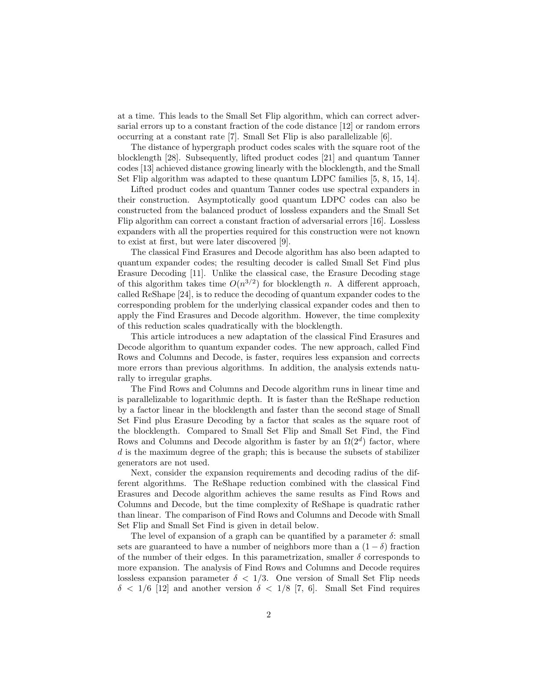
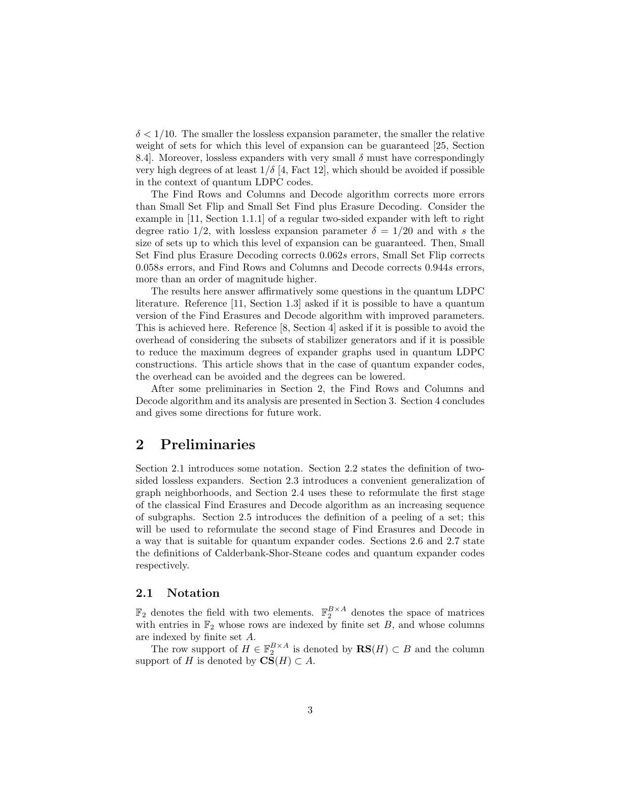
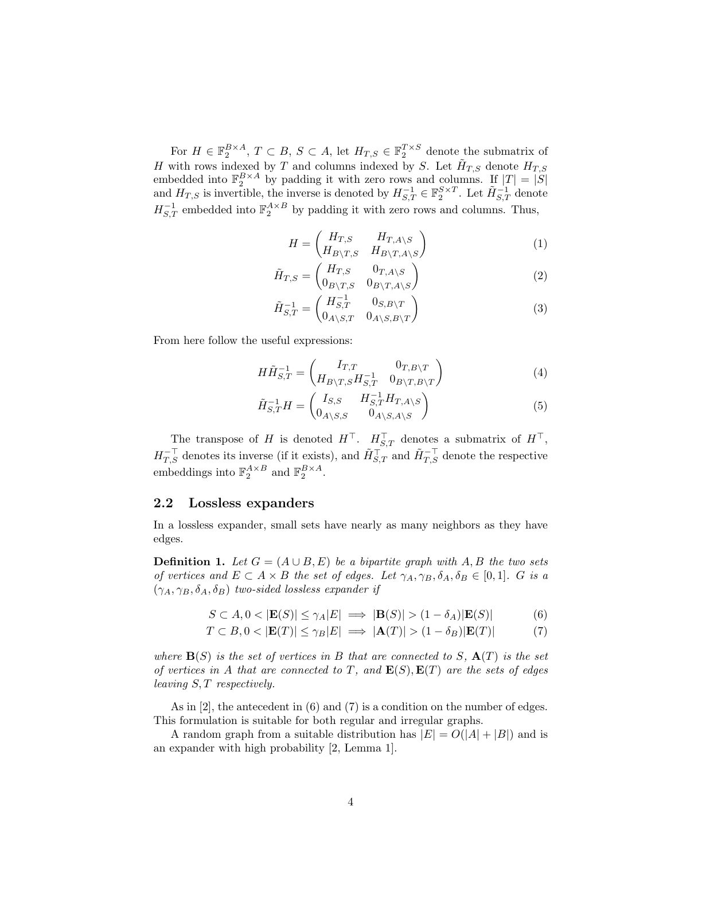
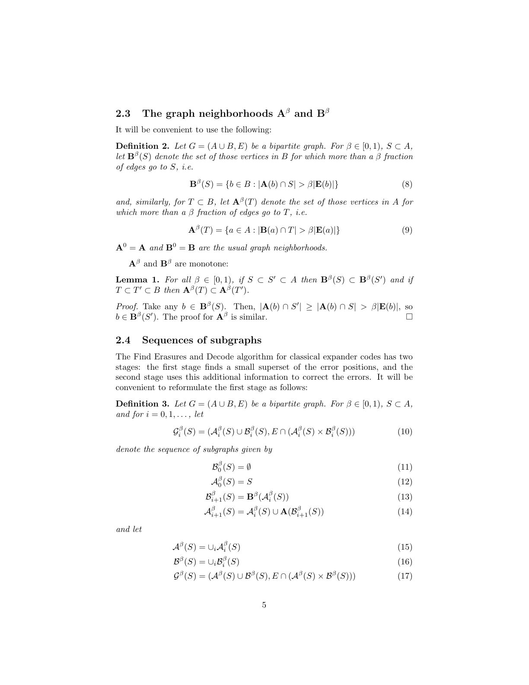
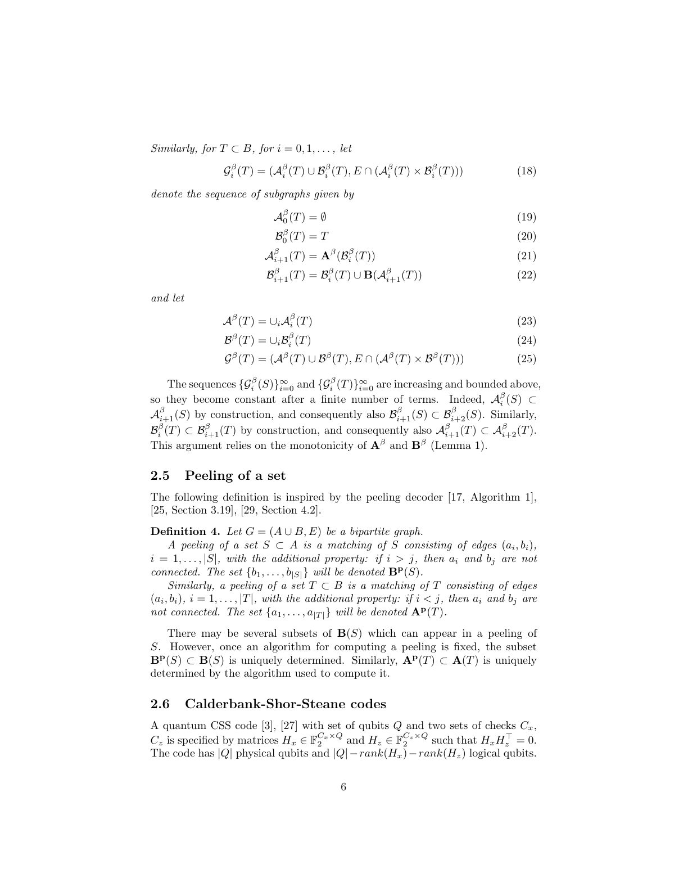
Summary. This paper introduces a novel, highly efficient quantum algorithm for decoding quantum expander codes. It significantly improves upon existing methods by achieving linear time complexity and logarithmic parallel depth. The development is crucial for advancing fault-tolerant quantum computation by enabling the correction of a larger fraction of errors in these quantum codes.
Why it may be interesting. This work provides a highly efficient theoretical tool for quantum error correction, which is fundamental to building fault-tolerant quantum computers, directly impacting the feasibility of large-scale quantum computation.
Main problem. The paper develops a faster and more efficient quantum adaptation of the 'Find Erasures and Decode' algorithm for quantum expander codes.
Main result. The new 'Find Rows and Columns and Decode' algorithm runs in linear time and is parallelizable to logarithmic depth, correcting significantly more errors than previous methods.
Method. The method adapts classical decoding techniques by reformulating the decoding process using iterative subgraphs and peeling procedures derived from the graph structure of the expander code.
Model / system. The work focuses on quantum CSS codes derived from lossless expander bipartite graphs, which are used to construct quantum expander codes for error correction.
Key observables. Error correction capability (number of correctable errors), time complexity (linear time, logarithmic depth), and the required expansion parameter $\delta$.
Important parameters / regimes. The lossless expansion parameter $\delta$, the maximum degree $d$, and the blocklength $\ell$.
Assumptions / limitations. The analysis requires the lossless expansion parameter $\delta < 1/3$ for the presented algorithm to function optimally.
Figures summary. Not specified.
Paper structure. The paper builds from defining the quantum expander code structure, introducing the 'Find Rows and Columns and Decode' algorithm, detailing the steps involving row/column support computation and peeling, and concluding with a rigorous complexity analysis for both sequential and parallel execution.
A new adaptation of the Find Erasures and Decode algorithm from classical to quantum expander codes is presented. It runs in linear time and is parallelizable to logarithmic depth. Compared to Small Set Flip and Small Set Find, the new algorithm avoids the overhead of considering the subsets of stabilizer generators, requires less expansion and corrects more errors.
Authors: Javier Vela-Tambo, Davud Azizov, Tian Guo
Type: both · Category: quantum information and computing · PDF: https://arxiv.org/pdf/2608.27099v1
Analysis basis: full PDF text, analyzed in chunks
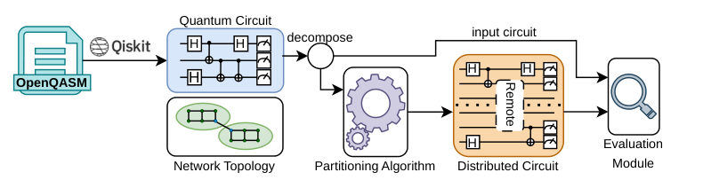
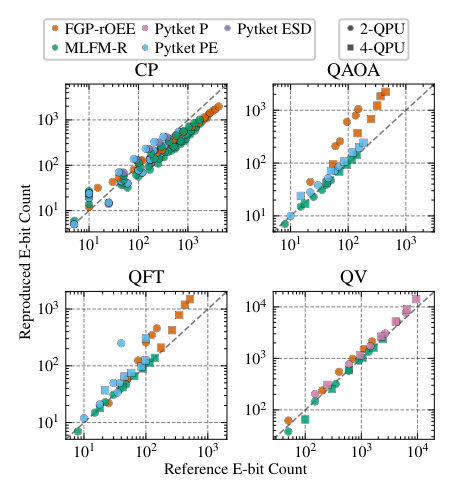
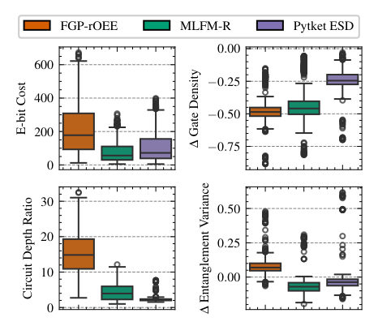
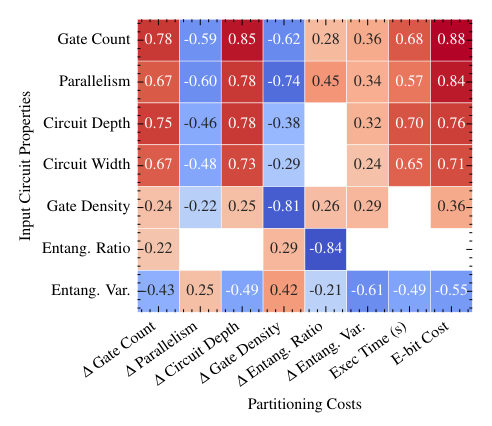
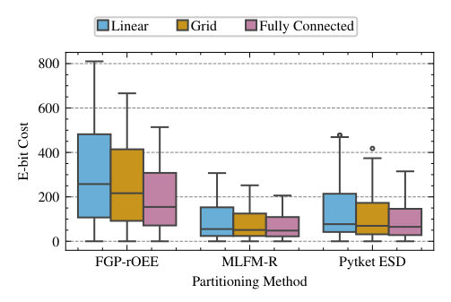
Summary. This paper addresses the critical gap in evaluating distributed quantum circuit partitioning by moving beyond simple entanglement cost metrics. Using an automated pipeline, the authors systematically test various algorithms on simulated DQC architectures across different network topologies. The findings prove that structural metrics, such as circuit depth and gate density, are crucial for accurately predicting real-world performance penalties in modular quantum processors.
Why it may be interesting. The focus on quantifying physical overheads like circuit depth and gate density in a distributed setting is highly relevant for understanding the practical limitations of scaling quantum computation beyond single, monolithic chips.
Main problem. Current evaluations of Distributed Quantum Computing (DQC) circuit partitioning algorithms are insufficient because they focus too narrowly on total entanglement cost, ignoring crucial structural and temporal overheads from network constraints.
Main result. The study demonstrates that partitioning algorithms with similar entanglement costs can yield drastically different physical execution penalties, emphasizing that structure-aware metrics are essential for guiding DQC compiler design.
Method. The authors developed an automated, reproducible evaluation pipeline that applies established monolithic benchmarking metrics to partitioned distributed circuits across various quantum network topologies and standardized workloads.
Model / system. The system modeled is Distributed Quantum Computing (DQC), which networks modular Quantum Processing Units (QPUs). Circuits are represented in OpenQASM format and are mapped onto specified network topologies (e.g., linear, grid, fully connected).
Key observables. Inter-QPU communication bottlenecks, circuit depth inflation, gate density reduction, e-bit count, circuit depth ratio, and $\Delta$gate density.
Important parameters / regimes. Standardized workloads include QASMBench, Quantum Fourier Transform (QFT), and QAOA; topologies include 4-QPU linear, grid, and fully connected networks.
Assumptions / limitations. The evaluation assumes that intra-QPU connectivity is fully connected, and the analysis relies on applying monolithic metrics to distributed structures.
Figures summary. Figures illustrate the evaluation pipeline, compare reproduced e-bit counts across benchmarks (QFT, QAOA, etc.), and show correlation matrices mapping input circuit properties against DQC partitioning costs and structural penalties.
Paper structure. The paper establishes the evaluation gap, details the automated pipeline for testing various partitioning algorithms (MLFM-R, FGP-rOEE, Pytket variants) across multiple topologies and workloads, presents empirical results comparing structural penalties, and concludes that comprehensive metrics are necessary for compiler design.
Distributed Quantum Computing (DQC) addresses the physical scaling limitations of monolithic quantum processors by networking modular Quantum Processing Units (QPUs). Efficient execution of quantum algorithms on DQC architectures requires compiling them across QPUs while minimizing inter-QPU communication bottlenecks, primarily through circuit partitioning. However, current evaluations of state-of-the-art partitioning heuristics focus primarily on the total entanglement cost of the partitions, failing to capture the broader structural and temporal overheads introduced by distributed network constraints. This paper addresses this evaluation gap by applying established monolithic benchmarking metrics to partitioned distributed circuits to quantify the performance impact of network constraints. Using an open-source, automated evaluation pipeline, we systematically assess diverse partitioning algorithms across standardized workloads and quantum network topologies. Our empirical results reveal that partitioning algorithms with comparable entanglement costs can still introduce drastically different physical execution penalties. By exposing these hidden trade-offs, such as severe increases in circuit depth and substantial reductions in gate density, this study demonstrates that comprehensive circuit-level metrics are essential for guiding the future design of DQC compilers.
Authors: Frederic Koehler, Youngtak Sohn
Type: theory · Category: disordered systems and neural networks · PDF: https://arxiv.org/pdf/2608.27372v1
Analysis basis: full PDF text, analyzed in chunks
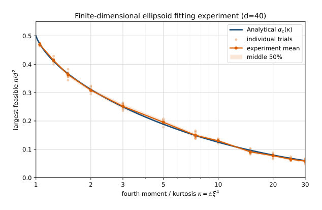
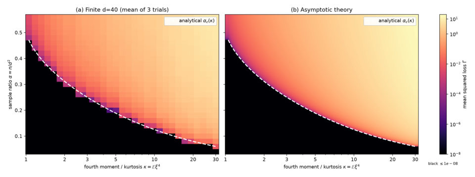
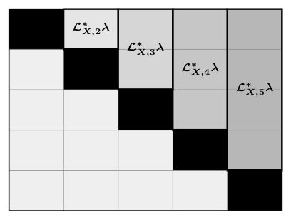
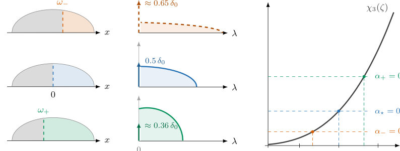
Summary. This paper rigorously establishes a sharp phase transition for the problem of fitting random data points with an ellipsoid in high dimensions. It determines a critical threshold $\alpha^\star(\kappa)$ that dictates whether an exact fit exists, revealing a universality property dependent only on the fourth moment of the data distribution. This resolves a long-standing conjecture for Gaussian data.
Why it may be interesting. The mathematical framework of phase transitions in high-dimensional geometry and optimization is highly relevant to understanding the generalization capabilities and phase transitions in complex machine learning models.
Main problem. The paper establishes the existence and nature of a sharp phase transition for determining if a set of random vectors can be perfectly fitted by a positive definite ellipsoid.
Main result. A sharp threshold $\alpha^\star(\kappa)$ exists, separating the regime where a fit is possible from the regime where the minimum fitting error is strictly positive. For Gaussian data, this threshold is found to be $1/4$.
Method. The analysis uses tools from random matrix theory and convex optimization, framing the problem as a random Semidefinite Program (SDP) in both satisfiable (SAT) and unsatisfiable (UNSAT) regimes.
Model / system. The model consists of $n$ random vectors $\{x_i\} \subset \mathbb{R}^d$ with independent subgaussian coordinates, mean zero, and a common fourth moment $\kappa$. The problem is finding $R \succeq 0$ such that $x_i^ op R x_i = 1$ for all $i$.
Key observables. The ratio $\alpha = n/d^2$, the threshold $\alpha^\star(\kappa)$, and the optimal squared fitting error $\Gamma_X$.
Important parameters / regimes. The common fourth moment $\kappa$ of the coordinate distribution, and the dimension $d$ relative to the number of samples $n$.
Assumptions / limitations. The vectors are assumed to have independent coordinates satisfying subgaussian bounds, though later results extend universality to broader classes of distributions.
Figures summary. Figures illustrate the phase diagram showing the theoretical threshold $\alpha^\star(\kappa)$ versus numerical estimates, and the average squared loss in the unsatisfiable regime.
Paper structure. The paper develops results by analyzing the SAT and UNSAT regimes separately, deriving the threshold $\alpha^\star(\kappa)$ based on the fourth moment $\kappa$, and proving universality for the asymptotic error in the failure regime.
We establish a sharp phase transition for fitting random vectors by an ellipsoid. The random vectors have independent subgaussian coordinates with mean zero, variance one, and a common fourth moment, and the number of vectors is proportional to the square of the dimension. We identify an explicit satisfiability threshold such that, with high probability, a positive definite ellipsoid passes through every data point below the threshold, whereas no positive semidefinite fit exists above it. We also determine the optimal squared fitting error throughout the unsatisfiable regime. In particular, the threshold depends on the coordinate distributions only through their common fourth moment, revealing a fourth moment universality phenomenon. For standard Gaussian data the threshold is $1/4$, resolving the ellipsoid fitting conjecture.
Papers from cond-mat.mtrl-sci, mes-hall, other, soft, supr-con. These archives are de-prioritized — they appear at the end regardless of relevance score.
Authors: Jianxiong Zhai, Zelei Zhang, Jiawei Yan
Type: theory · Category: other · PDF: https://arxiv.org/pdf/2608.27213v1
Analysis basis: full PDF text, analyzed in chunks
Topic relevance: 🔥 Keldysh / 2PI / non-Gaussian methods 4/5 · methods for driven-dissipative 3/5 · correlated / nonlocal dissipation 1/5 · driven-dissipative phase transition 1/5 · quantum measurements 1/5
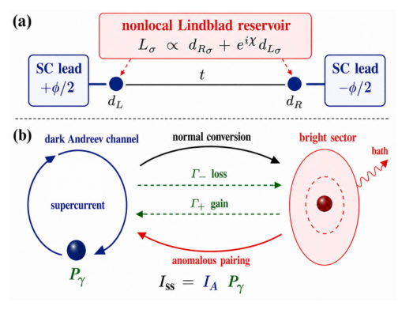
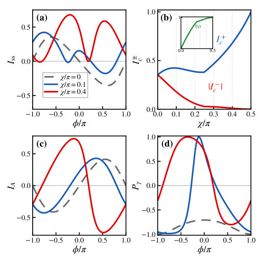
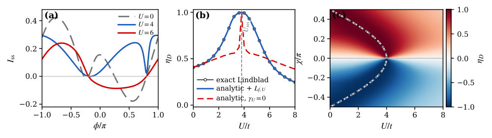
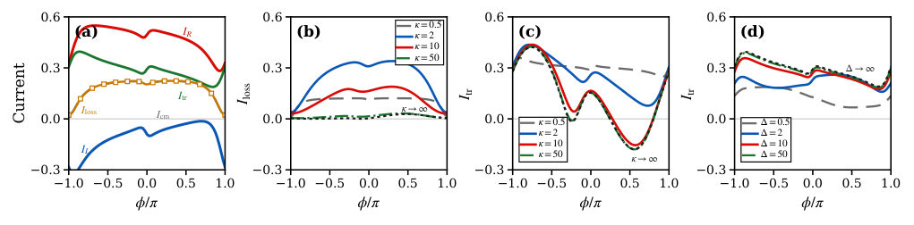
Summary. This paper introduces a mechanism for achieving a Josephson diode effect in a symmetric junction by engineering the non-equilibrium occupation of quantum states via attached reservoirs. By analyzing the system using advanced Green's function techniques, the authors demonstrate that the diode asymmetry originates solely from the reservoir-induced occupation factor, not from intrinsic junction asymmetry. This provides a powerful tool for designing superconducting electronic components.
Why it may be interesting. This work provides a sophisticated theoretical framework for engineering non-reciprocity in superconducting devices using reservoir engineering, which is highly relevant to superconducting quantum circuits and mesoscopic physics.
Main problem. The paper proposes a novel mechanism for generating a Josephson diode effect in a symmetric junction, where the nonreciprocity arises purely from non-equilibrium occupation of current-carrying states rather than an inherent asymmetry in the Andreev spectrum.
Main result. The diode effect is shown to be entirely governed by a reservoir-controlled occupation factor ($P_\gamma$), which can be engineered to approach ideal rectification ($\eta_D o 1$) even when the underlying spectral current ($I_A$) is reciprocal.
Method. The analysis employs the Keldysh-Lindblad formalism, first in the simplified Quantum Zeno limit, and later extended to finite superconducting gaps and dissipation using contour-ordered Green's functions.
Model / system. The system is a double-quantum-dot junction coupled to superconducting leads and engineered reservoirs. The dynamics are governed by a Lindblad master equation, which is analyzed using Green's function techniques.
Key observables. Diode efficiency ($\eta_D$), critical currents ($I_c^+, |I_c^-|$), and the current factorization $I_{ss} = I_A P_\gamma$.
Important parameters / regimes. Reservoir coupling strength ($\kappa$), superconducting gap ($\Delta$), and local Coulomb repulsion ($U$).
Assumptions / limitations. The initial analysis relies on the Quantum Zeno limit ($\kappa \gg t, \Gamma$), but the results are shown to be robust and extend to finite $\kappa$ and finite $\Delta$.
Figures summary. Figures illustrate Zeno filtering separating bright/dark orbitals, the diode effect via occupation reweighting ($P_\gamma$), and the effect of Coulomb repulsion inducing a dark-pair resonance.
Paper structure. The paper progresses from the simplified Zeno limit analysis to deriving the full steady-state Green's functions using contour formalism, culminating in the characterization of the finite-gap diode efficiency.
We propose a Josephson diode mechanism in which nonreciprocity arises not from a conventional asymmetric Andreev spectrum but from nonequilibrium occupation of the current-carrying states engineered by attached reservoirs. We realize this mechanism in a double-quantum-dot junction, where a phase-textured nonlocal reservoir acts as a quantum Zeno selector: rapid dissipation freezes out the bright state directly coupled to the jump operator $L$, while preserving an orthogonal dark Andreev channel whose supercurrent remains comparable to that of the lossless junction. In the infinite-gap limit, the steady-state current factorizes as $I_{\rm ss}=I_A P_γ$, so that even when the Andreev current $I_A$ is strictly reciprocal, the phase asymmetry of $P_γ$ alone can produce a Josephson diode effect through reservoir engineering. We further show that local Coulomb repulsion can drive the system toward a nearly ideal diode regime via a dark-pair resonance. Using Keldysh-Lindblad calculations, we demonstrate that our results remain robust for realistic junctions with a finite superconducting gap and dissipation.
Authors: Kin Hung Fung, Changhao Meng, Yixin Xiao, C. T. Chan
Type: theory · Category: other · PDF: https://arxiv.org/pdf/2608.26705v1
Analysis basis: full PDF text, analyzed in chunks
Topic relevance: correlated / nonlocal dissipation 3/5 · driven-dissipative phase transition 3/5 · Keldysh / 2PI / non-Gaussian methods 2/5 · methods for driven-dissipative 2/5 · non-equilibrium universality 2/5 · analog quantum simulation 1/5 · interference shaping light 1/5
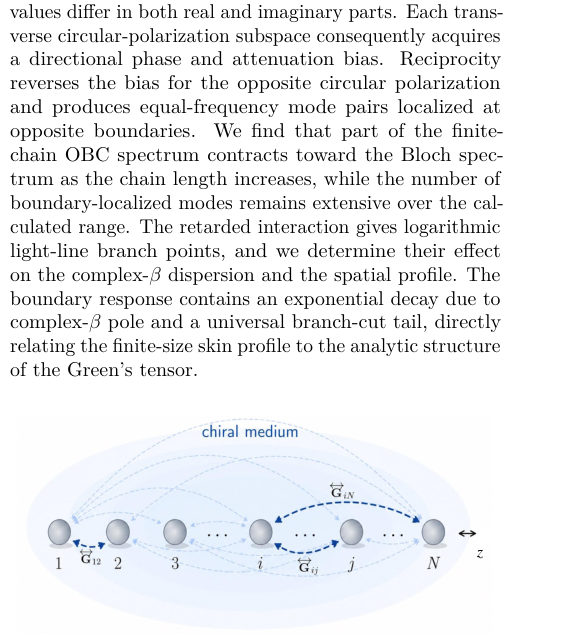
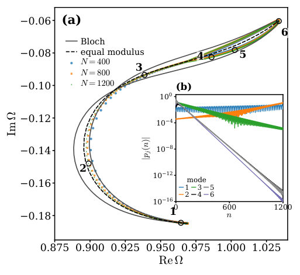
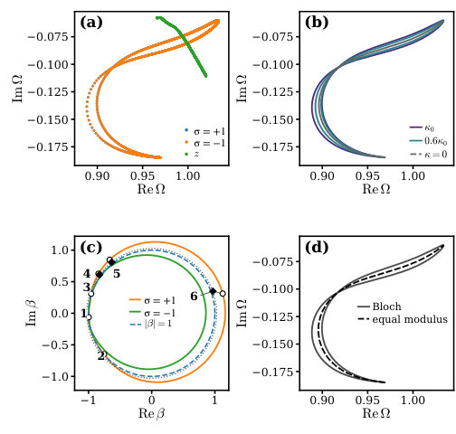
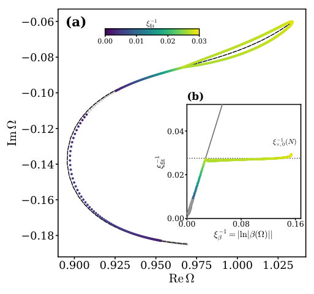
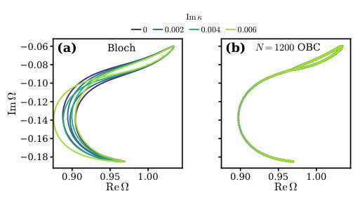
Summary. This paper theoretically analyzes the Non-Hermitian Skin Effect in a chain of dipoles coupled via long-range radiative interactions within a chiral medium. The authors find that the resulting skin mode profile has a unique decay structure involving both an exponential pole contribution and a slower, logarithmic tail. This work advances the understanding of boundary effects in open, chiral, and long-range coupled quantum systems.
Why it may be interesting. This work extends the study of NHSE into the realm of long-range radiative coupling in chiral media, providing a detailed profile of the boundary localization that goes beyond simple exponential decay, which is highly relevant for understanding open quantum systems and photonic structures.
Main problem. The study investigates the Non-Hermitian Skin Effect (NHSE) in a system characterized by long-range radiative coupling within a reciprocal chiral medium.
Main result. The system exhibits a complex skin mode profile composed of an exponential term from a complex-beta pole and a longer-range tail decaying as 1/[n(ln n)^2].
Method. The analysis involves comparing the open-boundary condition (OBC) spectrum to the Bloch spectrum using complex analysis techniques, particularly analyzing the complex-beta plane structure.
Model / system. The model is a straight chain of electric dipoles embedded in a passive reciprocal chiral medium, whose coupling is mediated by long-range radiative interactions.
Key observables. OBC spectrum vs. Bloch spectrum, skin mode profile decay rates, and the contraction of the OBC spectrum toward the Bloch spectrum.
Important parameters / regimes. Chirality parameter (kappa), lattice site distance (n), and the chain length (N).
Assumptions / limitations. The analysis notes that the standard equal-modulus construction is insufficient because the finite-chain decay is ultimately limited by light-line branch cuts.
Figures summary. Figures illustrate the Bloch spectrum versus the equal-modulus locus, show representative eigenvector amplitudes exhibiting different decay types, and compare OBC eigenvalues to the Bloch spectrum for increasing chain lengths.
Paper structure. The paper builds upon established theory of NHSE, analyzing the governing equations derived from the dipole interaction and radiative coupling. It proceeds by calculating and comparing the OBC and Bloch spectra, deriving the asymptotic decay profile, and discussing the implications of the light-line branch cuts.
We find that long-range radiative coupling through a passive reciprocal chiral medium produces an unusual non-Hermitian skin effect in a chain of electric dipoles. Although the system is reciprocal, the chirality generates polarization-dependent phase accumulation and attenuation, leading to degenerate pairs of skin modes localized at opposite boundaries. We find that the skin mode profile consists of an exponential contribution from an isolated complex-$β$ pole and a longer-range tail proportional to $1/[n(\ln n)^2]$, where $n$ is the distance from the occupied boundary measured in lattice sites. Finite-chain calculations show that part of the OBC spectrum contracts toward the Bloch spectrum, whereas the number of boundary-localized modes remains extensive.
Authors: W. J. Firth, G. K. Harkness
Type: theory · Category: other · PDF: https://arxiv.org/pdf/2608.26985v1
Analysis basis: full PDF text, analyzed in chunks
Topic relevance: driven-dissipative phase transition 3/5 · analog quantum simulation 2/5 · methods for driven-dissipative 2/5 · non-equilibrium universality 2/5 · Keldysh / 2PI / non-Gaussian methods 1/5 · correlated / nonlocal dissipation 1/5 · interference shaping light 1/5
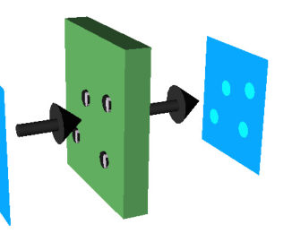
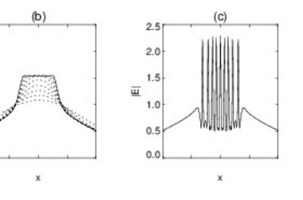
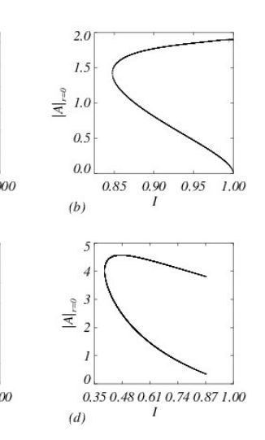
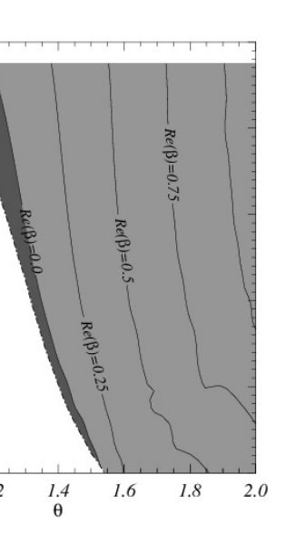
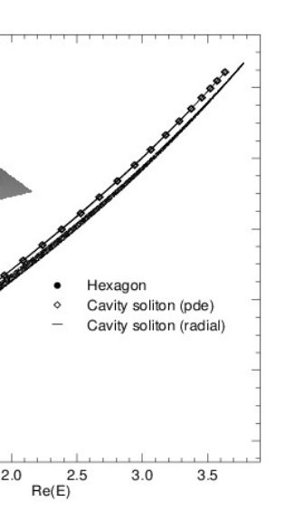
Summary. This review surveys cavity solitons, stable light spots in nonlinear optical cavities, detailing their mathematical modeling using equations like the Lugiato-Lefever equation. The authors establish that these solitons possess unique robustness and plasticity, making them promising candidates for next-generation all-optical memory and processing units.
Why it may be interesting. This work is highly relevant to open quantum systems and quantum optics, as cavity solitons represent stable, localized excitations in nonlinear wave systems, analogous to engineered quantum states or information carriers.
Main problem. The paper reviews the history, physical interpretation, and potential applications of cavity solitons—stable, bright, non-diffracting spots of light in driven optical cavities.
Main result. Cavity solitons can exist even when the nonlinear medium properties oppose those needed for standard Kerr solitons, suggesting they are robust candidates for all-optical information processing.
Method. The analysis involves deriving and solving mean-field models, such as the Lugiato-Lefever equation, and performing stability analysis using Jacobian eigenvalues.
Model / system. The system is a driven optical cavity containing a nonlinear medium, modeled by perturbed Nonlinear Schrödinger Equations (NLS) or the Lugiato-Lefever (LL) equation. These models describe the spatial evolution of light fields.
Key observables. Soliton stability (eigenvalues of the Jacobian), field profiles (localized spots), and the existence domain of stable solutions.
Important parameters / regimes. Linear loss ($\epsilon$), cavity mistuning ($ heta$), and pump intensity ($I$).
Assumptions / limitations. The analysis relies on mean-field approximations, particularly the high-finesse assumption used to derive the LL equation from the full cavity dynamics.
Figures summary. Figures illustrate schematic memory systems, Gaussian beam switching, bifurcation diagrams showing soliton states vs. parameters, and phase-plane plots confirming soliton stability regions.
Paper structure. The paper progresses by reviewing the historical context (Stone Age to Information Age), developing the mathematical models (NLS to LL), analyzing the stability and physical interpretations of the solitons, and concluding with potential applications in all-optical processing.
A driven optical cavity containing a nonlinear medium can support stable, soliton-like objects, bright non-diffracting spots of light on a uniform background. Importantly, the nonlinear medium need not support ordinary (propagating) spatial solitons, and cavity solitons have been both predicted and observed in a saturable absorber, and predicted to even exist in self-defocusing media. The history, present status, and physical interpretation of such cavity solitons is reviewed. Recent research predicts cavity solitons in semiconductor cavity models with properties interesting for applications to optical information processing. Cavity solitons are natural `bits' for spatial information, possessing both robustness and plasticity, and some potential applications of their unique properties are mentioned.
Authors: Yuriy Yerin, Boris Malomed, Stefan-Ludwig Drechsler, F. Sebastian Bergeret
Type: theory · Category: other · PDF: https://arxiv.org/pdf/2608.26782v1
Analysis basis: full PDF text, analyzed in chunks
Topic relevance: driven-dissipative phase transition 3/5 · Keldysh / 2PI / non-Gaussian methods 2/5 · methods for driven-dissipative 2/5 · non-equilibrium universality 2/5 · Frenkel-Kontorova 1/5 · analog quantum simulation 1/5 · quantum measurements 1/5
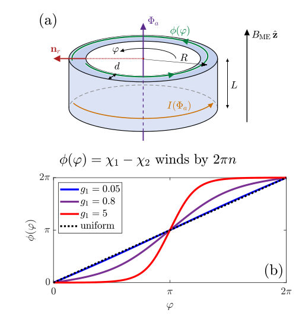
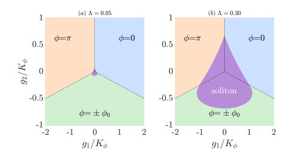
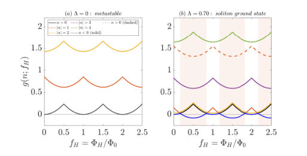
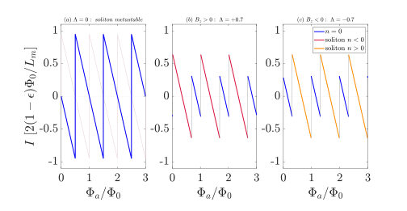
Summary. This theoretical work investigates how breaking inversion symmetry in two-band superconductors stabilizes interband phase solitons (IBPS) in a ring geometry. The key mechanism is a magneto-electric coupling term that acts as a chiral bias, forcing the soliton to become the true ground state. This transition is predicted to manifest as a unique, field-odd signature in the measured current-flux response.
Why it may be interesting. The mechanism of stabilizing a topological excitation (the soliton) via a symmetry-breaking coupling term ($\Lambda$) is analogous to controlling quantum states in superconducting circuits or Josephson junctions, making it relevant to open quantum systems and topological physics.
Main problem. The study determines the conditions under which an Interband Phase Soliton (IBPS) in a two-band superconducting ring transitions from a metastable state to a true ground state.
Main result. Breaking inversion symmetry introduces a magneto-electric coupling term that biases the energy balance, allowing the soliton to become the true ground state, which is observable as a field-odd branch in current-flux measurements.
Method. The analysis involves minimizing a reduced Gibbs energy functional derived from the two-band Ginzburg-Landau theory, solving the Double Sine-Gordon equation, and analyzing the resulting phase diagram.
Model / system. The system is a two-band superconductor confined to a ring geometry. The physics is modeled using a GL functional augmented by a magneto-electric Lifshitz term, leading to a relative-phase degree of freedom ($\phi$) that supports soliton excitations.
Key observables. Field-odd soliton branches in the equilibrium current-flux response $I_n(\Phi_a)$; the ground state selection between uniform and solitonic configurations.
Important parameters / regimes. The magneto-electric coupling strength ($\Lambda$), the winding number ($n$), and the superconducting gap parameters ($g_1, g_2$).
Assumptions / limitations. The analysis assumes a thin-walled ring geometry and that the order parameters are rigid, depending only on the azimuthal coordinate $\phi$.
Figures summary. Figures illustrate the physical setup in a noncentrosymmetric ring, the double-sine-Gordon profile for the soliton, and phase diagrams showing the transition between uniform and solitonic ground states as the bias $\Lambda$ increases.
Paper structure. The paper progresses from establishing the physical model and the problem of metastability in centrosymmetric rings, to incorporating the symmetry-breaking magneto-electric term ($\Lambda$), deriving the energy minimization conditions, and finally predicting the observable signature in current-flux measurements.
Two-band superconductors maintain a relative interband phase which can carry winding soliton excitations in a superconducting ring, supported by independent winding numbers in the two bands. In rings of superconductors obeying the inversion symmetry the interband phase solitons are metastable states, separated from the uniform ground state by the energy of screening currents. In this work we find that, breaking the inversion symmetry strongly enough, one can make the soliton a true ground state. In that case, a magneto-electric coupling, absent in centrosymmetric materials, contributes critically above a certain threshold, a relevant, free-energy term, odd with respect to the winding number, which biases the energy balance in favor of a particular winding sign. Once the bias outweighs the energy cost that originally made the soliton metastable, a phase soliton with a finite winding number becomes the ground state, with chirality set by the applied field. In current--flux measurements performed in equilibrium states, the effect is demonstrated by field-odd soliton branches, that replace the metastable ones existing in mesoscopic rings, built by two-component superconductors, realizing a magneto-electric analog of the Little--Parks fluxoid-branch physics in the interband relative-phase sector.
Authors: Binayyak Bhusan Roy, Jay Deep Sau, Sumanta Tewari
Type: theory · Category: other · PDF: https://arxiv.org/pdf/2608.27452v1
Analysis basis: full PDF text, analyzed in chunks
Topic relevance: driven-dissipative phase transition 3/5 · analog quantum simulation 2/5 · quantum measurements 2/5 · Keldysh / 2PI / non-Gaussian methods 1/5 · methods for driven-dissipative 1/5
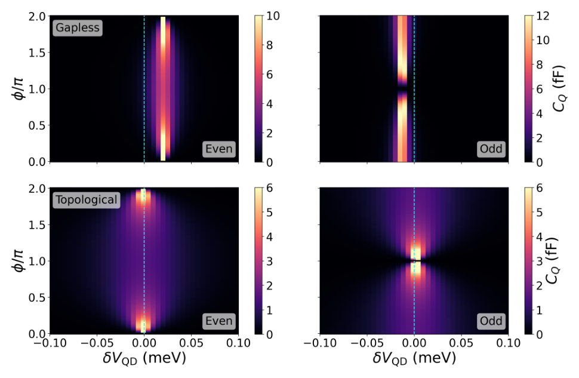
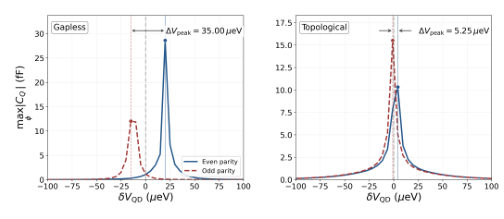
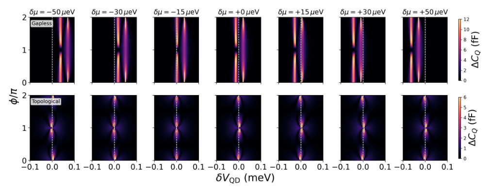
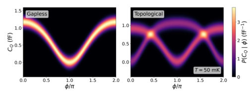
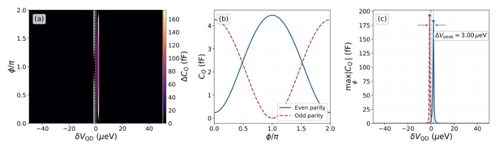
Summary. This theoretical work addresses the challenge of distinguishing true Majorana zero modes in a topological superconductor from spurious signals in a normal wire segment. By analyzing the stability of the quantum capacitance response across a range of independently controlled parameters, the authors demonstrate that only the topological system exhibits the required robust, persistent signature, providing a clear experimental benchmark.
Why it may be interesting. This work provides a crucial, experimentally testable diagnostic tool—parametric stability—to confirm the topological nature of superconducting states, which is vital for realizing topological quantum computing hardware.
Main problem. The paper aims to experimentally distinguish the quantum capacitance signatures arising from a true Topological Majorana Wire (TS wire) versus those from a gapless Normal Wire Segment, as both can exhibit misleading Majorana-like flux-dependent oscillations.
Main result. The topological response is characterized by the persistence of the two parity branches over a finite range of independently controlled parameters, a stability criterion that the gapless normal wire segment fails to meet.
Method. The authors calculated parity-resolved quantum capacitance ($\Delta C_Q$) by analyzing the system's response to varying external parameters ($\mu, V_{QD}$) in both theoretical models.
Model / system. The study models a quantum-dot interferometer coupled to either a superconducting topological wire or a gapless normal wire segment. The analysis involves calculating the quantum capacitance using parity-resolved methods based on the system's effective Hamiltonian.
Key observables. Parity-resolved quantum capacitance ($\Delta C_Q$), flux-dependent oscillations, and the stability/persistence of the two parity branches over a finite parameter range.
Important parameters / regimes. Dot potential ($V_{QD}$), chemical potential ($\mu$), magnetic flux, and temperature ($T=50$ mK).
Assumptions / limitations. The distinction relies on the parametric stability of the response over a finite region, rather than matching the signal at a single optimized point in parameter space.
Figures summary. Figures compare parity-resolved capacitance maps for both gapless and topological interferometers, showing the separation of maxima (e.g., 35.0 $\mu$eV vs. 5.25 $\mu$eV) and the stability of the response under parameter sweeps.
Paper structure. The paper establishes the problem of mimicking Majorana signatures, develops the theoretical framework using parity-resolved quantum capacitance, calculates and compares the signatures for the gapless and topological cases, and concludes by emphasizing the necessity of parameter-space stability for definitive identification.
Majorana zero modes (MZMs) are spatially separated, near-zero-energy excitations expected at the ends of a topological superconducting (TS) wire. A quantum-dot interferometer can be used to probe the quantum capacitance of the TS wire, and the location and magnitude of the capacitance resonances provide information about the MZMs, while their magnetic flux dependence probes coherent coupling to the two Majorana modes. It has been recently shown that, a gapless (i.e., $Δ=0$) wire segment can also exhibit flux-dependent quantum capacitance oscillations through Aharonov-Bohm interference and, with suitable tuning, can reproduce a Majorana-like response. Here we show that the two mechanisms can be distinguished experimentally. In the gapless normal wire segment, the two parity-dependent signals originate from separate energy resonances corresponding to the lack of generic zero-energy states. By contrast, in the topological wire, the pair of low energy levels with even and odd parity are nearly degenerate in energy, and therefore, the two parity branches remain within the same broader resonance region in the quantum-dot potential, and persist under independent variations of the dot potential and wire chemical potential. Our results show that the experimentally observed quantum capacitance response is distinguished not by a particular flux trace at one optimized point in parameter space, but by its persistence over a finite range of independently controlled parameters, including the quantum-dot potential. This parameter space stability provides a direct means of ruling out the gapless normal wire segment as the origin of the observed Majorana-like response.
Authors: Levente Máthé, Ioan Grosu, Liviu P. Zârbo, Ionel Ţifrea
Type: theory · Category: quantum information and computing · PDF: https://arxiv.org/pdf/2608.26341v1
Analysis basis: full PDF text, analyzed in chunks
Topic relevance: Keldysh / 2PI / non-Gaussian methods 3/5 · analog quantum simulation 3/5 · methods for driven-dissipative 2/5
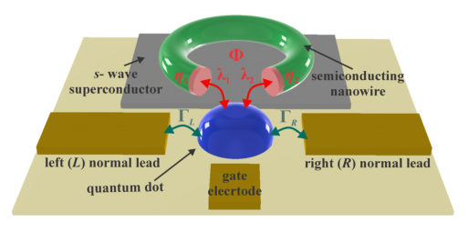
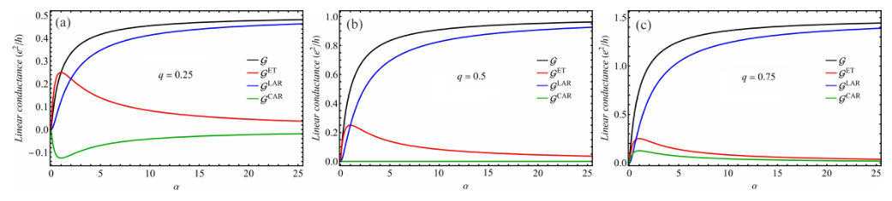
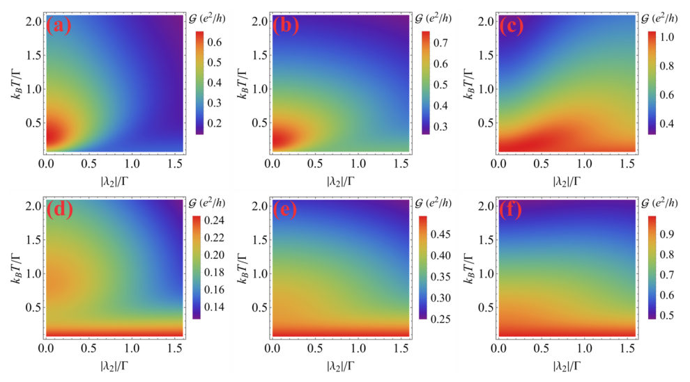
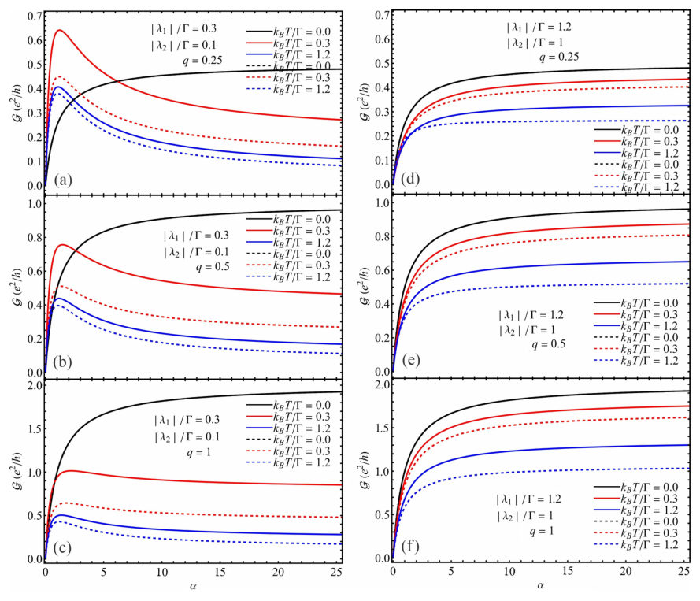
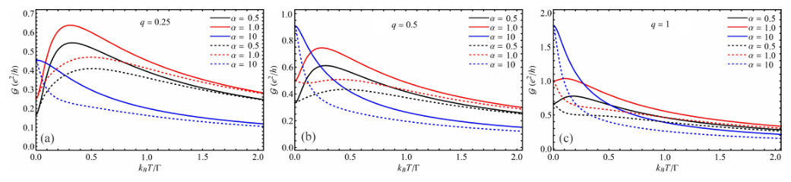
Summary. This theoretical study models quantum transport through a quantum dot coupled to Majorana bound states in a superconducting nanowire. By analyzing the linear conductance, the authors predict distinct oscillatory behaviors dependent on magnetic flux and bias voltage asymmetries. The findings emphasize that these asymmetry parameters are critical factors that must be accounted for when interpreting experimental measurements of MBS signatures.
Why it may be interesting. The explicit dependence of transport signatures on asymmetry parameters ($\alpha, q$) provides crucial, testable predictions for experimental realization and characterization of topological qubits.
Main problem. The study investigates the quantum transport signatures of Majorana Bound States (MBSs) through a quantum dot coupled asymmetrically to a topological superconducting nanowire junction.
Main result. The linear conductance exhibits characteristic oscillations dependent on the magnetic flux phase ($\phi$) and the bias voltage asymmetry parameter ($q$), with periodicity changing based on whether the central QD energy level is tuned to the Fermi level.
Method. The analysis employs non-equilibrium Green's function techniques to calculate the linear conductance ($G$) in the subgap regime.
Model / system. The system consists of a central quantum dot (QD) coupled asymmetrically to normal leads and to two MBSs localized at the ends of a topological superconducting nanowire threaded by a tunable magnetic flux. The Hamiltonian includes terms for leads, MBSs, the QD, and tunneling.
Key observables. Linear conductance ($G$), which is analyzed by decomposing it into electron tunneling ($G_{ ext{ET}}$), local Andreev reflection ($G_{ ext{LAR}}$), and crossed Andreev reflection ($G_{ ext{CAR}}$).
Important parameters / regimes. Leads–QD coupling asymmetry ($\alpha$), bias voltage asymmetry ($q$), magnetic flux phase ($\phi$), and the QD energy level ($\epsilon_d$).
Assumptions / limitations. The analysis is performed in the zero-temperature and finite-temperature limits, assuming the low-energy transport regime.
Figures summary. Figures schematically represent the junction setup and illustrate the dependence of conductance on parameters like $\phi$, $T$, $\alpha$, and $q$.
Paper structure. The paper develops the theoretical framework using Green's functions, analyzes the conductance components ($G_{ ext{ET}}, G_{ ext{LAR}}, G_{ ext{CAR}}$) separately, and presents results for both unhybridized and hybridized MBSs in both zero and finite temperature regimes.
We present a theoretical study of the quantum transport through a nanoscale system in which a central quantum dot (QD) is coupled asymmetrically to normal leads and to two Majorana bound states (MBSs) localized at the ends of a topological superconducting nanowire threaded by a tunable magnetic flux. The effects of the leads--QD coupling asymmetry parameter $α$ and the bias voltage asymmetry parameter $q$ on the system's linear conductance are considered for the case of unhybridized and hybridized MBSs. In the zero-temperature limit, for unhybridized MBSs the system's linear conductance is finite only when the magnetic flux phase $φ= (2n+1)π$ ($n\in\mathbb{Z}$) and it scales as $\mathcal{G}=2qαe^2/[h(α+1)]$, while for hybridized MBSs it presents a complicated dependence on the system's parameters. At finite temperature, for unhybridized MBSs, the system's linear conductance oscillates as a function of the magnetic flux phase $φ$ with a period of $2π$, and the position of the linear conductance maxima can be shifted from $φ=2nπ$ to $φ=(2n+1)π$ by simply varying the value of the bias voltage asymmetry parameter $q$. For hybridized MBSs, the conductance exhibits a similar behavior when the energy level of the central QD, $\varepsilon_d$, is tuned at the leads' Fermi level ($\varepsilon_d=\varepsilon_F$), although when $\varepsilon_d\neq\varepsilon_F$ the oscillation period changes to $4π$, and the position of the linear conductance maxima depends on the actual value of $\varepsilon_d$ and other parameters in the system. Our results highlight the experimental importance of the leads-QD and bias voltage asymmetry parameters, which are often present in realistic experimental setups, and can strongly affect the identification and observation of MBSs transport signatures.
Authors: Mario Di Luca, Emily Hajigeorgiou, Ning Ma, Alexandra Waldherr, Kenji Watanabe, Takashi Taniguchi, Mitali Banerjee
Type: experiment · Category: strongly correlated electrons · PDF: https://arxiv.org/pdf/2608.27444v1
Analysis basis: full PDF text, analyzed in chunks
Topic relevance: analog quantum simulation 3/5 · Full counting statistics 2/5 · quantum measurements 2/5 · QC/QI experiment 1/5
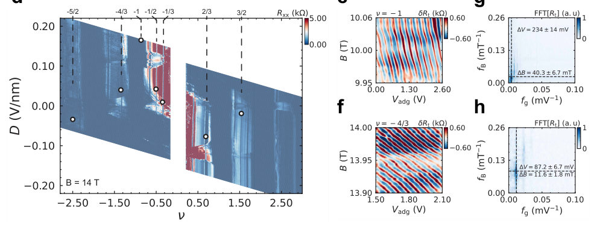
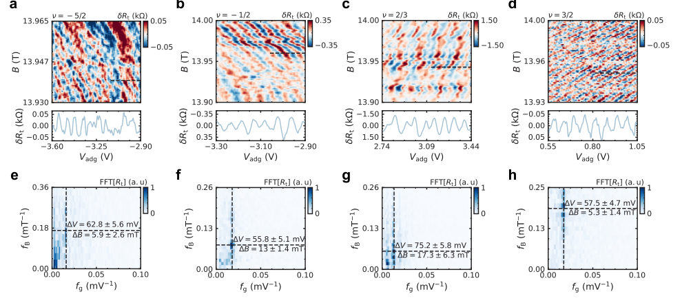
Summary. This experimental work measures the charge of quasiparticles in even-denominator Fractional Quantum Hall states within bilayer graphene using a gate-defined antidot. The key finding is the observation of a localized charge of $e/4$, which strongly suggests that these states possess a non-Abelian topological ground state. The study utilizes precise measurements of oscillation periodicities to confirm these fractional charges.
Why it may be interesting. The investigation of fractional charge and non-Abelian statistics in a solid-state platform like graphene is highly relevant to understanding exotic correlated electron states and potential topological quantum computation.
Main problem. The study aims to measure the charge of quasiparticles hosted by even-denominator Fractional Quantum Hall (FQH) states to determine the underlying topology of the ground state.
Main result. The authors observed localized quasiparticle charges of $e/4$ at several even-denominator FQH states ($ u = -5/2, -1/2, 3/2$), suggesting compatibility with a non-Abelian ground state.
Method. Measurements were performed using a gate-defined antidot in bilayer graphene, analyzing oscillations in transmitted resistance ($\delta R_t$) as a function of gate voltage and magnetic field.
Model / system. The physical system is Bernal-stacked bilayer graphene (BLG) containing a gate-defined antidot, which hosts the FQH liquid in the surrounding region.
Key observables. Localized quasiparticle charge ($q$), oscillation periodicities in gate voltage ($\Delta V$) and magnetic field ($\Delta B$), and the filling factor ($ u$).
Important parameters / regimes. Even-denominator filling factors ($ u = -5/2, -1/2, 3/2$), the coupling strength between antidot-bound states and edge states, and temperature ($T$).
Assumptions / limitations. The analysis relies on extracting charge from periodicity ratios, though limitations regarding unique charge determination versus filling factor are noted.
Figures summary. Figures detail device schematics, SEM images, and maps showing $\delta R_t$ oscillations across various filling factors, including evidence for minimal excitation and doubled periodicity regimes.
Paper structure. The paper systematically measures quasiparticle charges and periodicities across different FQH states, first establishing the $e/4$ charge, then investigating the crossover behavior upon increasing coupling, and finally addressing measurement ambiguities like gate hysteresis.
Measuring the charge of the quasiparticles hosted by even-denominator fractional quantum Hall (FQH) states is essential to identify the topology of their ground state. Here, we use a gate-defined antidot in bilayer graphene, with an additional gate to control only the antidot potential, to measure the charge of the quasiparticles trapped around it in even-denominator FQH states. We observe a localized charge of $e/4$ at $ν=-5/2$, $-1/2$, and $3/2$, consistent with the minimal excitation expected for leading candidate even-denominator ground states, and $e/3$ at the hole-conjugate state $ν=2/3$. We further show that increasing the coupling between the antidot-bound states and extended edge states drives a crossover between two regimes, characterized by the minimal-excitation gate-voltage period and approximately twice that period, respectively. We discuss two possible explanations for this crossover: quasiparticle bunching and a crossover between distinct antidot transport regimes. Our results, together with previous observations of the daughter states, show that the even-denominator FQH states in bilayer graphene are compatible with a non-Abelian ground state, and that their quasiparticles can be localized around a quantum Hall antidot, a necessary ingredient for topological quantum computation.
Authors: Stefan Goppelt, Lisa M. Günther, Jürgen Köhler
Type: both · Category: other · PDF: https://arxiv.org/pdf/2608.26717v1
Analysis basis: full PDF text, analyzed in chunks
Topic relevance: quantum optics experiment 3/5 · interference shaping light 2/5 · quantum measurements 2/5
Summary. This paper addresses the significant experimental hurdle of performing Circular Dichroism spectroscopy on individual molecules. The authors develop a comprehensive theoretical and practical guide to systematically identify, quantify, and correct for polarization-related artifacts that plague single-object measurements. By achieving artifact suppression, the work enables the reliable probing of single-particle chirality in complex biophysical systems.
Why it may be interesting. This work is highly relevant to AMO physics and quantum optics as it deals with the precise characterization and control of polarization states in complex, non-ideal optical systems, which is crucial for single-molecule spectroscopy.
Main problem. Performing Circular Dichroism (CD) spectroscopy on single molecular objects is extremely challenging because the lack of spatial and orientational averaging makes the measurements highly susceptible to experimental polarization artifacts.
Main result. The authors present a systematic theoretical and experimental framework demonstrating that reliable single-object CD measurements are achievable by rigorously characterizing and controlling polarization-related artifacts.
Method. The work combines theoretical modeling (e.g., Taylor expansion of intensity distributions) with experimental implementation using fluorescence-excitation spectroscopy with controlled LCP/RCP light sources.
Model / system. The study focuses on single chiral molecular aggregates, such as chlorosomes, which are used as the physical system. The measurement relies on the difference in fluorescence-excitation spectra recorded using Left and Right Circularly Polarized light.
Key observables. The primary observable is the dissymmetry factor, $g(\lambda_{35})$, which quantifies the chirality of the sample.
Important parameters / regimes. The analysis is concerned with controlling artifacts arising from LCP/RCP intensity imbalances, deviations from ideal circular polarization, and coupling with linear dichroism.
Assumptions / limitations. Key assumptions include the use of small angle approximations for polarization variations and the ability to model complex polarization artifacts using Gaussian intensity distributions.
Figures summary. The notes mention a schematic sketch of the experimental setup used for single-object CD spectroscopy, detailing the components for polarization control.
Paper structure. The paper progresses from establishing the physical basis of CD spectroscopy to detailing the experimental limitations imposed by single-object measurements, developing a mathematical framework to quantify polarization artifacts, and finally presenting the methodology for artifact suppression.
Molecular aggregates are at the basis of a broad range of functional systems, including photosynthetic light-harvesting complexes, organic photovoltaics, optoelectronic devices, and molecular sensors. Their structural organization, however, is often difficult to resolve because intrinsic heterogeneity. In this context, circular dichroism (CD) spectroscopy is particularly powerful because of its sensitivity to the three-dimensional organization of molecular building blocks. Extending CD measurements from ensembles to individual objects therefore offers a unique approach to probing supramolecular architecture in heterogeneous, non-crystallizable systems. However, without spatial and orientational averaging, measurements are highly sensitive to imbalances between left- and right-circularly polarized excitation, deviations from ideal circular polarization, and polarization imperfections coupled to linear dichroism, which creates spurious CD signals. Here, we present a systematic theoretical and experimental framework for understanding, quantifying, and controlling artifacts in single-object CD spectroscopy. We develop a mathematical description of the principal artifact mechanisms, identify their origins in practical implementations, including Pockels-cell-based polarization modulation, and establish strategies for their minimization. We validate this framework using an experimental implementation capable of acquiring CD spectra from individual molecular aggregates over 690-785 nm. Our results demonstrate that reliable single-object CD measurements are achievable when polarization-related artifacts are rigorously characterized and controlled. This Tutorial Review provides a unified theoretical framework and practical guide for single-object CD spectroscopy and its application to single-particle chirality, supramolecular photonics, and biophotonics.
Authors: Álvaro Buendía, Marcelo S. Barreiro, Nuno M. R. Peres
Type: theory · Category: other · PDF: https://arxiv.org/pdf/2608.26905v1
Analysis basis: full PDF text, analyzed in chunks
Topic relevance: driven-dissipative phase transition 3/5 · non-equilibrium universality 2/5 · analog quantum simulation 1/5 · correlated / nonlocal dissipation 1/5
Summary. This work shows that an electrostatic spherical shell can host an exceptional point (EP) and exhibit non-Hermitian physics solely by exploiting dielectric anisotropy, without needing gain or loss. By mapping the radial problem to a damped oscillator, the authors demonstrate that crossing a hyperbolicity threshold causes the internal electric field to switch from decaying to oscillating. This establishes hyperbolic media as a powerful, passive platform for simulating non-Hermitian phenomena.
Why it may be interesting. The ability to engineer non-Hermitian physics (like EPs) using purely classical, passive electromagnetic boundary conditions (hyperbolicity) is highly relevant for designing novel metamaterials and optical devices.
Main problem. The paper demonstrates that an exceptional point (EP) and non-Hermitian phase transition can be realized in a passive, reciprocal, and lossless electrostatic spherical shell using only dielectric anisotropy.
Main result. Hyperbolic media provide a platform to simulate non-Hermitian physics, causing the internal electric field to transition from monotonic decay to spatial oscillation across the EP.
Method. The problem is reduced to solving a Cauchy-Euler equation in the logarithmic radial coordinate, which maps onto a damped oscillator and a two-site Hatano-Nelson Hamiltonian.
Model / system. The system is an anisotropic core-shell nanoparticle where the permittivity tensor in the shell is diagonal, $\epsilon_b = ext{diag}(\epsilon_r, \epsilon_t, \epsilon_t)$. The physics is governed by the dielectric anisotropy factor, $\epsilon_t/\epsilon_r$.
Key observables. Electric field amplitude $|E|/E_0$, field localization in the $ heta$ parameter, and the appearance of anomalous secular modes at the EP.
Important parameters / regimes. The dielectric anisotropy factor $\epsilon_t/\epsilon_r$ acts as the sole control parameter, defining regimes like elliptic, hyperbolic overdamped, and hyperbolic underdamped.
Assumptions / limitations. The analysis is restricted to the dipolar term ($l=1$) in the initial notes, and the general framework uses separation of variables for the electrostatic potential.
Figures summary. Figures illustrate the physical setup, the phase diagram of field exponents vs. anisotropy, and cross-sections of the field amplitude $|E|/E_0$ showing the transition across the EP for different anisotropy values.
Paper structure. The paper analyzes the electrostatic potential using separation of variables, deriving a Cauchy-Euler equation. It then maps this equation to known non-Hermitian models (damped oscillator, Hatano-Nelson) to analyze the transition controlled by the anisotropy parameter.
Exceptional points (EPs) are non--Hermitian degeneracies at which both eigenvalues and eigenvectors coalesce, usually engineered through balanced gain and loss or non--reciprocity. In this work, we show that the radial electrostatic problem of an anisotropic core--shell nanoparticle realizes an EP without any of the alluded conditons. Written in the logarithmic radial coordinate, the problem is a Cauchy--Euler equation that maps onto a damped oscillator and, equivalently, onto a two-site Hatano--Nelson Hamiltonian, so that the non-Hermiticity is emulated in space rather than in time and the sole control parameter is the degree of dielectric anisotropy, $\varepsilon_t/\varepsilon_r$. The shell is passive, reciprocal, and lossless, yet it hosts an EP and a non--Hermitian phase transition governed by hyperbolicity alone. Beyond a hyperbolicity threshold the electric field inside the shell turns from monotonic decay into spatial oscillation, producing hotspots at intermediate radii which can be exploited to tailor fluorescence, strong coupling, sensing, or cloaking. More broadly, this establishes hyperbolic media as a platform to simulate non--Hermitian physics without gain, loss, or non--reciprocity.
Authors: Masahiro Ohkuma, Ryo Matsumoto, Shintaro Adachi, Shinobu Onoda, Kensei Terashima, Takao Watanabe, Yoshihiko Takano, Keigo Arai
Type: experiment · Category: other · PDF: https://arxiv.org/pdf/2608.27160v1
Analysis basis: full PDF text, analyzed in chunks
Topic relevance: QC/QI experiment 3/5 · quantum measurements 3/5
Summary. This work reports an integrated diamond platform combining NV centers for magnetic sensing with BDD structures for microwave delivery and local thermometry. By demonstrating that the integrated BDD thermometer accurately measures local heating effects missed by external thermometers, the authors prove this platform is a practical tool for quantitative, wide-field magnetic imaging of temperature-sensitive materials like superconductors at cryogenic temperatures.
Why it may be interesting. The development of an integrated, on-chip platform for quantum sensing that self-monitors its local thermal environment is crucial for quantitative studies of quantum materials under extreme conditions, bridging quantum sensing with advanced metrology.
Main problem. Wide-field nitrogen-vacancy (NV) magnetic imaging at cryogenic temperatures requires both microwave excitation and accurate local temperature knowledge near the sensing region.
Main result. The integrated boron-doped diamond (BDD)–NV platform successfully enables wide-field magnetic imaging while simultaneously providing local thermometry, demonstrating its practicality for cryogenic quantum sensing.
Method. The authors integrated NV centers, a BDD microwave antenna, and a BDD thermometer onto a single diamond substrate to perform Optically Detected Magnetic Resonance (ODMR) measurements.
Model / system. The system utilizes NV centers in diamond for magnetic sensing, coupled with BDD structures for microwave delivery and local temperature monitoring. This integrated platform allows for simultaneous measurement of magnetic fields and thermal environment near superconducting samples.
Key observables. Temperature-dependent Meissner response of cuprate superconductors, magnetic-field maps, and local temperature readings (comparing BDD vs. stage thermometer).
Important parameters / regimes. Cryogenic temperatures, microwave power, superconducting transition temperatures (Tc), and local heating effects (e.g., laser-induced heating > 4 K).
Assumptions / limitations. The BDD thermometer's resistance-to-temperature calibration required fitting data with a fourth-order polynomial, and the microwave power was estimated based on nominal input power.
Figures summary. Figures show the platform schematic, comparisons of temperature readings (BDD vs. stage thermometer) under varying power, and temperature-dependent wide-field ODMR imaging of superconducting samples.
Paper structure. The paper introduces the need for integrated sensing, details the platform construction (NV/BDD), presents comparative measurements showing the BDD thermometer's superior local temperature resolution, and concludes by applying the platform to map superconducting properties as a function of local temperature.
Wide-field nitrogen-vacancy (NV) magnetic imaging at cryogenic temperatures requires microwave excitation and reliable knowledge of the temperature near the sensing region. Here, we report an integrated diamond quantum-sensing platform combining an ensemble of NV centers with a boron-doped diamond (BDD) microwave antenna and thermometer formed on the same diamond substrate. The BDD antenna provides microwave excitation for optically detected magnetic resonance measurements, and the BDD thermometer monitors the thermal environment near the NV sensing region. The BDD thermometer detected laser-induced local heating that was not clearly resolved by a stage-mounted thermometer. Using this platform, we imaged the temperature-dependent Meissner response of multiple cuprate superconductors while recording the temperature. These results demonstrate that the integrated BDD--NV platform provides a practical approach for cryogenic wide-field magnetic imaging with integrated microwave delivery and local thermometry.
Authors: Christopher T. -K. Lew, Andrew D. M. Charles, Brant C. Gibson, Jean-Philippe Tetienne, David A. Broadway
Type: experiment · Category: other · PDF: https://arxiv.org/pdf/2608.26396v1
Analysis basis: full PDF text, analyzed in chunks
Topic relevance: quantum measurements 3/5 · QC/QI experiment 2/5 · quantum optics experiment 1/5
Summary. This work presents a novel magnetic communication system pairing an acoustically actuated magnetoelectric resonator as a transmitter with a highly sensitive quantum diamond magnetometer receiver. By demonstrating amplitude and phase-encoded transmission at 20 kHz, the authors establish a viable, compact alternative to traditional loop-based magnetic communication methods for conductive environments.
Why it may be interesting. While the core physics involves quantum sensing (NV centers), the application is in classical communication engineering. However, the use of quantum sensors to measure classical fields at low frequencies makes it relevant to open quantum systems research concerning environmental coupling and noise characterization.
Main problem. To develop a compact and highly sensitive alternative magnetic communication system for short-to-medium range transmission in conductive media, overcoming limitations of traditional loop antennas.
Main result. The hybrid system combining an acoustically actuated magnetoelectric resonator transmitter and a quantum diamond magnetometer receiver successfully demonstrated communication, achieving sensitivities of 50 pT/sqrt(Hz) and 1.2 mrad/sqrt(Hz).
Method. The system uses amplitude and phase encoding of AC magnetic fields, measured via the spin-echo decay of Nitrogen-Vacancy (NV) centers in diamond, driven by an acoustically actuated magnetoelectric resonator.
Model / system. The platform consists of a transmitter using a multi-layered ME resonator heterostructure and a receiver utilizing a micrometer-scale NV diamond magnetometer. The magnetometry relies on measuring the phase accumulation ($\delta\phi$) via a Hahn-echo sequence.
Key observables. Amplitude and phase sensitivity (50 pT/sqrt(Hz) and 1.2 mrad/sqrt(Hz)), Signal-to-Noise Ratio (SNR), and magnetic field decay with distance.
Important parameters / regimes. Operating frequency ($f_{AC} = 20 ext{ kHz}$), spin coherence time ($T_2 = 231 \pm 3 \mu ext{s}$), and field decay proportional to $1/d^3$ in the near-field.
Assumptions / limitations. The primary limitation is residual laser-intensity noise, although the theoretical shot-noise limit is calculated to be $0.33 ext{ pT}/\sqrt{ ext{Hz}}$.
Figures summary. Figures illustrate the schematic of the hybrid system, the AC magnetometry measurement using Hahn-echo sequences, the successful transmission/reception using OOK and BPSK modulation, and the decay of the magnetic field strength with distance in various media.
Paper structure. The paper details the physical setup, demonstrates communication using modulation schemes (OOK/BPSK), analyzes the magnetic field decay in different media, and provides theoretical appendices on resonator characterization and noise limits.
Wireless communication via propagating magnetic fields is a communication modality that has recently garnered significant interest for short-to-medium range communication in conductive mediums, such as underwater and underground, where existing approaches utilizing electric fields are highly inefficient. Typical implementations of magnetic communication make use of loop antennas as both the transmitter and receiver, with the sensitivity and frequency response scaling with and inversely with the loop cross-sectional area, respectively. Here, we explore an alternative hybrid magnetic communication system consisting of an highly radiation efficient and compact acoustically actuated magnetoelectric resonator as the transmitter, and a highly sensitive micrometer scale quantum magnetometer based on nitrogen-vacancy centers in diamond as the receiver, with their core properties unconstrained by size. We demonstrate amplitude and phase-encoded transmission and reception of AC magnetic fields at $f_{\mathrm{AC}}$ = 20 kHz, achieving a sensitivity of 50 pT/$\sqrt{\mathrm{Hz}}$ and 1.2 mrad/$\sqrt{\mathrm{Hz}}$, respectively. This work establishes the use of hybrid magnetoelectric resonator and quantum diamond magnetometer communication system as a viable alternative to existing loop-based approaches.
Authors: Debika Debnath, Ioannis Ioannidis, Paramita Dutta, Mircea Trif, Thore Posske
Type: theory · Category: other · PDF: https://arxiv.org/pdf/2608.26265v1
Analysis basis: full PDF text, analyzed in chunks
Topic relevance: quantum measurements 3/5 · Full counting statistics 1/5 · Keldysh / 2PI / non-Gaussian methods 1/5 · analog quantum simulation 1/5
Summary. This work proposes using the supercurrent flowing through Shiba-Majorana hybrid systems to detect topological phase transitions. By analyzing characteristic discontinuities in the critical supercurrent, the authors introduce a non-invasive method to read out and control the ground state parity of Majorana zero modes. This advances the field by linking measurable transport properties to abstract topological quantum states.
Why it may be interesting. The use of supercurrent measurements as a diagnostic tool for topological transitions bridges superconducting transport measurements with fundamental topological physics, which is relevant for understanding quantum state readout in superconducting circuits.
Main problem. The paper addresses the detection and manipulation of topological phase transitions occurring in Shiba-Majorana hybrid superconducting systems.
Main result. Supercurrent discontinuities observed when passing supercurrent through the system provide a non-invasive method to read out and control the ground state parity of Majorana states.
Method. The authors utilize theoretical modeling based on the supercurrent calculation derived from the ground state energy, $I(\phi) = 2\partial E_{GS}(\phi) / \partial \phi$.
Model / system. The system involves Shiba-Majorana hybrid structures, modeled by an effective Hamiltonian $H_{eff}$ coupling a superconducting STM tip to low-energy Shiba-Majorana modes mediated by a control magnetic adatom.
Key observables. Supercurrent $I(\phi)$ as a function of superconducting phase bias $\phi$, and characteristic discontinuities in the critical current $I_c$.
Important parameters / regimes. Superconducting phase bias $\phi$, finite temperature $T$, and the relative energy scales of the Shiba and Majorana couplings ($|\epsilon_M|$ vs $|\epsilon_S|$).
Assumptions / limitations. The analysis assumes that the system follows the lowest-energy branch and focuses on the contribution of discrete in-gap states.
Figures summary. Figures illustrate the schematic setup involving adatom chains and the supercurrent jump coinciding with the sign change of the inner Majoranas hybridization energy, and show the effect of finite temperature smearing on the transition signature.
Paper structure. The paper develops the theoretical framework by projecting the Hamiltonian onto the low-energy subspace, deriving the supercurrent dependence on the phase bias, and then analyzing the resulting discontinuities as signatures of topological phase transitions.
The non-Abelian statistics of Majorana zero modes has inspired numerous proposals for their detection and manipulation in topological superconductors. Implementations based on magnetic adatoms deposited on superconductors draw particular attention due to their capabilities for precise atomic manipulation and the control over disorder. Here, we propose a scheme for detecting changes in the ground state parity of a topologically non-trivial adatom system by passing supercurrent through their low-energy modes. We unravel characteristic discontinuities in the critical current driven by zero-energy level crossings. We apply these findings to a setup where the Majorana coupling is mediated by a single control magnetic adatom hosting a Yu-Shiba-Rusinov state, and test the robustness of our results against finite temperatures and different tunneling regimes. Our findings introduce a non-invasive approach for reading out and controlling the ground state parity of Majorana states in Shiba-Majorana hybrid systems.
Authors: Vincent P. Flynn, Benedetta Flebus
Type: theory · Category: other · PDF: https://arxiv.org/pdf/2608.26260v1
Analysis basis: full PDF text, analyzed in chunks
Topic relevance: analog quantum simulation 3/5 · Keldysh / 2PI / non-Gaussian methods 1/5
Summary. This work demonstrates that even when a magnet maintains a simple, collinear classical spin structure, quantum correlations can harbor hidden frustration. This frustration is induced by a symmetry-allowed Dzyaloshinskii-Moriya interaction, leading to topological vortices in the magnon correlations. These vortices manifest macroscopically as a pattern of counter-circulating, equilibrium spin currents in the quantum vacuum.
Why it may be interesting. The concept of emergent, non-trivial quantum fluxes and currents existing entirely within the quantum vacuum, decoupled from static magnetic order, is highly relevant to understanding topological phases in condensed matter systems.
Main problem. The paper investigates how hidden frustration, manifested as circulating quantum correlations, can exist in a magnet that remains classically collinear.
Main result. The system hosts a frustrated, current-carrying quantum vacuum despite classical collinearity, driven by symmetry-allowed Dzyaloshinskii-Moriya coupling.
Method. The analysis uses Holstein-Primakoff expansion, Bogoliubov diagonalization for magnon modes, and topological diagnostics like Berry curvature and Wilson loops.
Model / system. The study focuses on a 2D inverse Lieb lattice realized in a centrosymmetric altermagnet insulator, modeled by a spin Hamiltonian including exchange and Dzyaloshinskii-Moriya interactions.
Key observables. Anomalous magnon pair correlations, gauge-invariant fluxes, and antiferrochiral equilibrium spin currents.
Important parameters / regimes. The regime requires $J_1 > 0$, $D_1 eq 0$, and $K > 0$ for the collinear G-type AFM ground state.
Assumptions / limitations. The analysis is performed using linear spin-wave theory (Holstein-Primakoff expansion) and assumes a centrosymmetric structure.
Figures summary. Figures illustrate the model lattice, the phase accumulation of the anomalous correlator $F_k$ showing vortices at high-symmetry points (X and Y), and vector plots of the Berry connection and curvature showing opposite-chirality vortices.
Paper structure. The paper proceeds by defining the Hamiltonian, linearizing it via Holstein-Primakoff, calculating magnon dispersions, identifying topological features (vortices) in the anomalous correlators, and finally deriving the real-space consequences as counter-circulating spin currents.
We show that a magnet can remain perfectly collinear while its quantum vacuum circulates. In a centrosymmetric altermagnet, a symmetry-allowed locally staggered Dzyaloshinskii-Moriya coupling imprints a gauge-irremovable vortex-antivortex pair into the anomalous magnon pair correlations at high-symmetry points in momentum space. In real space, these hidden vortices produce an antiferrochiral array of equilibrium spin currents circulating oppositely around neighboring plaquettes. Gauge-irremovable frustration therefore survives despite classical collinearity: it exists entirely in the quantum correlations. Our results show that complex pairing, gauge-invariant fluxes, and equilibrium loop currents - structures encountered across electronic flux phases, spin liquids, and frustrated quantum magnets - can be encoded in the squeezed vacuum of a collinear magnet.
Authors: Rui-Chang Shen, Yihao Yang, Haoran Xue
Type: theory · Category: other · PDF: https://arxiv.org/pdf/2608.27011v1
Analysis basis: full PDF text, analyzed in chunks
Topic relevance: analog quantum simulation 3/5
Summary. This paper proposes using the coupling between magnons and phonons in a honeycomb phononic crystal to engineer a phononic Chern insulator. By breaking time-reversal symmetry via a circularly polarized magnon mode, the system opens a topological gap, allowing for the creation of tunable, non-dissipative edge states. This establishes a route for magnetically reconfigurable topological phononics in GHz acoustic devices.
Why it may be interesting. This work provides a concrete, solid-state platform (acoustic/phononic) for realizing topological phenomena, bridging concepts from magnetism (magnons) and condensed matter topology (Chern insulators) in a potentially observable, high-frequency domain.
Main problem. The primary goal is to realize a phononic Chern insulator at high frequencies (GHz) to achieve robust, one-way boundary transport in acoustic devices.
Main result. The study demonstrates that chiral magnon-phonon hybridization can create a topologically gapped phononic Chern phase with tunable Chern numbers (|C|=1 and |C|=2).
Method. The analysis involves deriving an effective Hamiltonian using the Schrieffer-Wolff transformation in the large-detuning limit, leading to a Haldane-type model.
Model / system. The system is a honeycomb phononic crystal hybridized with ferromagnetic islands. The physics is governed by the coupling between lattice phonons and magnons (Kittel mode).
Key observables. Chern numbers (C), topological gaps ($\Delta_1, \Delta_2$), and the existence of chiral edge states.
Important parameters / regimes. Magnon-phonon coupling strength ($g$), detuning ($\delta\omega$), and the ability to tune the Chern number by varying these parameters.
Assumptions / limitations. The analysis relies on the large-detuning approximation ($|\delta\omega| \gg g, t$) and assumes the coupling phase originates from projecting the right-circular Kittel mode.
Figures summary. Figures illustrate the honeycomb structure, momentum-space coupling intensity, and bulk band structures showing the Chern numbers and the spatial distribution of edge states.
Paper structure. The paper establishes the full Hamiltonian ($H = H_{ph} + H_m + H_{int}$), derives the effective Hamiltonian ($H_{eff}$) via Schrieffer-Wolff, and then analyzes the resulting Haldane-type model to predict tunable Chern phases.
High-frequency artificial phononic crystals offer a low-loss platform compatible with on-chip integration, yet realizing Chern phononic phases at GHz frequencies remains challenging. Here, we propose a magnon-induced phononic Chern insulator in a honeycomb phononic crystal hybridized with ferromagnetic islands at the hexagon centers. A circularly polarized Kittel mode couples to the surrounding phonons with a phase winding, which breaks time-reversal symmetry and opens a full Chern gap. In the large-detuning regime, this mechanism leads to an effective Haldane-type phononic model with magnon-induced complex hopping. By tuning the magnon-phonon interaction, the full hybrid system accesses Chern phases with tunable Chern numbers |C|=1 and |C|=2. The predicted gaps can exceed realistic phonon and magnon linewidths, enabling their observation in GHz acoustic devices. Our work establishes chiral magnon--phonon hybridization as a route to magnetically reconfigurable topological phononics.
Authors: Li-Qiao Xia, Aviram Uri, Zachary W. Gomez, Molly P. Andersen, Julian May-Mann, Kenji Watanabe, Takashi Taniguchi, Trithep Devakul, Yves H. Kwan, Pablo Jarillo-Herrero, Aaron Sharpe
Type: both · Category: other · PDF: https://arxiv.org/pdf/2608.26252v1
Analysis basis: full PDF text, analyzed in chunks
Topic relevance: analog quantum simulation 3/5
Summary. This work reports the observation of quantized Hall resistance in a supermoiré Chern mosaic formed from twisted graphene, contradicting initial expectations of gapless transport. The authors explain this robust quantization by proposing that a moderate magnetic field drives a valley-selective topological transition, establishing a global Chern insulator state with a Chern number of -6.
Why it may be interesting. The mechanism of field-induced topological phase transitions in moiré heterostructures, which can be modeled using continuum theories and analyzed via Chern numbers, provides a rich platform for understanding emergent topological quantum phenomena relevant to quantum simulation.
Main problem. The study investigates the mechanism behind quantized charge transport in a Supermoiré Chern Mosaic, contrasting the expected unquantized behavior from domain-wall modes with the observed quantized Hall resistance.
Main result. The system exhibits a robust, quantized Hall resistance ($R_{yx} \approx -h/6e^2$) under a perpendicular magnetic field, attributed to a field-induced, valley-selective topological transition that gaps the domain-wall modes.
Method. The research combines magnetotransport measurements (Landau fan measurements) with theoretical calculations using the Bistritzer-MacDonald continuum model and the Hofstadter spectrum analysis.
Model / system. The physical system is helical trilayer graphene (HTG) twisted by a magic angle ($\sim 1.8^\circ$), forming a supermoiré mosaic of domains with opposite valley-resolved Chern numbers.
Key observables. Quantized Hall resistance ($R_{yx}$), longitudinal resistance ($R_{xx}$), and the topological invariant, the Chern number ($C$).
Important parameters / regimes. Low temperatures (e.g., 4.6 K), perpendicular magnetic field ($B$), and the twist angle ($ heta$).
Assumptions / limitations. The analysis relies on the orbital Zeeman model and assumes that the observed quantization implies a global gap, overriding the expected gapless domain-wall transport.
Figures summary. Figures show magnetotransport data (Landau Fans) confirming quantized plateaus, and theoretical figures illustrate the evolution of the Hofstadter spectrum and the conditions for a global Chern gap.
Paper structure. The paper progresses from establishing the physical system and the initial theoretical conflict (gapless vs. quantized transport) to presenting experimental measurements confirming quantization, and finally developing theoretical models (Hofstadter/Orbital Zeeman) to explain the field-induced topological transition responsible for the global gap.
Magic-angle helical trilayer graphene---three graphene layers sequentially twisted in the same direction by $\sim1.8^\circ$---relaxes into a mosaic of domains that, at zero field, carry opposite valley-resolved Chern numbers, with boundaries hosting a network of gapless conducting modes. Charge transport through this network depends sensitively on how the modes connect and scatter, making well-quantized transport unlikely. Contrary to this expectation, we observe a field-induced Chern gap with Chern number $C=-6$ emanating from charge neutrality; in this gap, the Hall resistance is quantized to within $2\%$ of the expected value, $-h/6e^2$, at 4.6 K. We explain this behavior using both Hofstadter and orbital Zeeman calculations, which show that a moderate magnetic field drives a valley-selective topological transition. Above the transition, the total Chern number of the occupied states in each spin-valley flavor becomes identical across neighboring domains, and the domain-wall modes can become gapped. Though the central valence-band Chern numbers still differ between the two domain types, the observed quantized transport attests to a global gap.
← Index · ← Previous · Next →